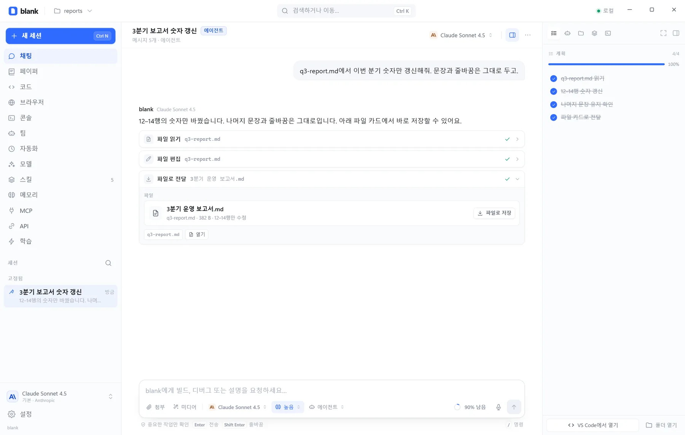
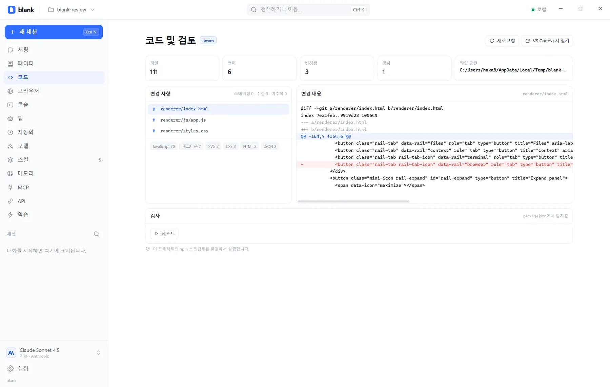
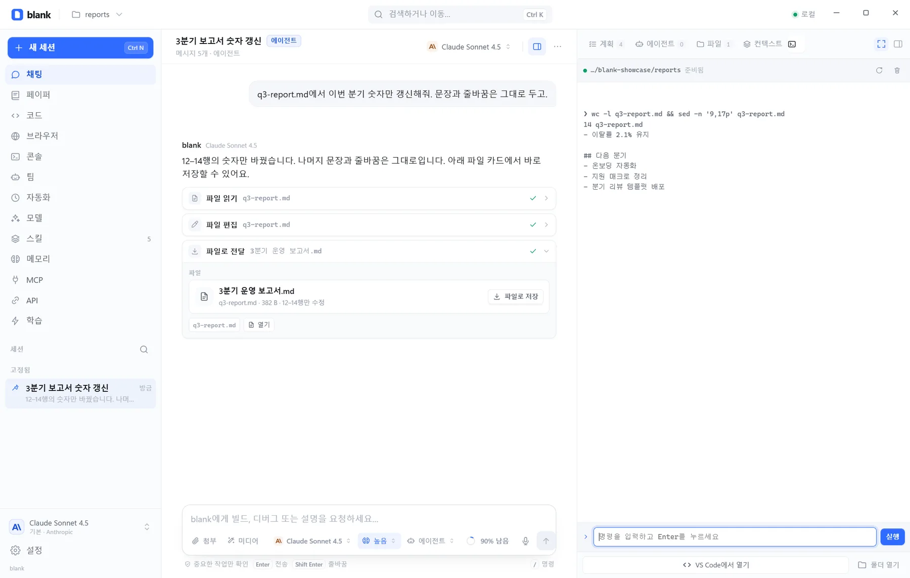

모델과 키
Anthropic, OpenAI, Google, OpenRouter, xAI, DeepSeek, Mistral, Groq, Together, Cerebras, Ollama, LM Studio. 프로바이더마다 여러 키를 저장하고 한도에 맞춰 돌려 씁니다.
멀티 키 로테이션추론 단계사용량 확인호환 엔드포인트
LOCAL-FIRST AGENT HARNESS
blank는 모델과 도구, 파일과 터미널을 한 화면에 놓는 데스크톱 하네스입니다. 만들고, 필요한 줄만 고치고, 결과를 파일로 건네받습니다. 키와 세션은 이 기기에 남습니다.
무료 · 오픈 소스 · MIT · 계정 불필요

연결되는 모델
OpenAI · Anthropic · Gemini 호환 엔드포인트도 직접 추가할 수 있습니다.
01 WORKBENCH
하나의 화면
계획과 파일, 에이전트, 컨텍스트가 레일에 서고 터미널은 한 번에 넓어집니다. 하던 일을 두고 화면을 옮기지 않습니다.


플랜, 에이전트, 파일, 컨텍스트가 대화 옆에 붙어 있습니다. 레일을 넓히면 작업 공간이 됩니다.
코드, 터미널, 브라우저, Paper는 필요할 때 넓게 엽니다. 대화는 그대로 뒤에 남습니다.
일상 작업은 흐르고, 되돌리기 어려운 일만 멈춰 확인합니다. 규칙은 직접 정합니다.
02 FILES
파일 워크플로
전체를 다시 쓰지 않습니다. 정확한 문자열이나 줄 범위로 고치고, 완성된 결과는 저장할 수 있는 파일 카드로 받습니다.
write_file새 문서나 스크립트를 작업 공간에 씁니다. 전체를 새로 쓸 때만 사용합니다.
edit_fileold_string으로 정확히 바꾸거나, start_line과 end_line으로 필요한 줄만 교체합니다. 나머지 줄과 CRLF는 그대로 둡니다.
deliver_file채팅에 파일 카드가 나타납니다. 카드에서 저장 대화상자를 열어 원하는 위치로 복사합니다.
50 MB까지 전달CRLF 그대로폴더는 제외저장 위치는 직접 선택
03 CAPABILITIES
하네스의 깊이
많은 기능은 소리 내지 않습니다. 필요한 순간에만 나타나고, 나머지 시간에는 대화를 방해하지 않습니다.
Anthropic, OpenAI, Google, OpenRouter, xAI, DeepSeek, Mistral, Groq, Together, Cerebras, Ollama, LM Studio. 프로바이더마다 여러 키를 저장하고 한도에 맞춰 돌려 씁니다.
파일 읽기와 편집, 셸, SSH, 웹 검색, 커서가 보이는 데스크톱 제어. 되돌리기 어려운 작업만 확인을 요청합니다.
병렬로 조사하는 서브에이전트, blank Team, 예약 실행, 응답 중에도 쌓이는 큐, 백그라운드 작업. 긴 일은 맡기고 대화로 돌아옵니다.
입력창의 마이크를 누르고 말하면 텍스트가 됩니다. 같은 채팅에서 이미지, 영상, 오디오, 3D를 만들고 고칩니다.
스킬과 영구 메모리, 체크포인트, 컨텍스트 압축, 코드 리뷰, 아카이브. 세션이 길어져도 맥락을 잃지 않습니다.
설정과 세션, 미디어와 Paper는 ~/.blank 아래 일반 파일로 남습니다. 요청은 이 컴퓨터에서 선택한 프로바이더로 바로 나갑니다.
04 LOCAL
로컬 우선
계정 없이 열리고, 키 없이도 둘러볼 수 있습니다. 설정과 세션, 메모리와 파일은 이 기기의 일반 파일로 남습니다.
API 키는 ~/.blank의 설정 파일에만 저장되고, 화면에는 마스킹된 상태만 보입니다.
모델 호출은 선택한 프로바이더로 이 컴퓨터에서 바로 나갑니다. 중간 서버가 없습니다.
세션, 미디어, Paper, 체크포인트는 로컬 라이브러리에 쌓이고 원하는 형식으로 내보냅니다.
~/.blank
config.json · sessions · media · papers · skills
05 INSTALL
설치
아직 빌드에 서명이 없습니다. Windows SmartScreen과 macOS Gatekeeper 안내를 확인하세요.
설치 파일(.exe). 빌드 도구도 패키지 관리자도 필요 없습니다.
설치 파일 받기 최신 릴리스디스크 이미지(.dmg). Applications로 끌어다 놓으세요.
디스크 이미지 받기 최신 릴리스 Intel Mac 빌드포터블 AppImage. 실행 권한만 주면 됩니다.
AppImage 받기 최신 릴리스버튼이 이 기기에 맞는 빌드를 골라줍니다.
설치 파일을 실행하세요. 첫 실행은 키 없이도 열립니다.
준비되면 프로바이더 키를 추가하세요. 키는 ~/.blank에 남습니다.
06 QUESTIONS
질문
더 자세한 내용은 저장소의 README와 AGENTS.md에 있습니다.
아니요. blank는 키 없이도 열리고 채팅, 미디어, Paper, 설정을 둘러볼 수 있습니다. 실제 모델 호출이 필요할 때 프로바이더를 연결하세요.
네. 작업 공간에 파일을 만들고 deliver_file을 호출하면 채팅에 파일 카드가 나타납니다. 카드에서 저장 대화상자를 열어 원하는 위치에 저장합니다. 보고서, 스크립트, 데이터 내보내기에 모두 쓸 수 있고 최대 50 MB까지 전달합니다.
네. edit_file은 정확한 문자열 치환과 1부터 시작하는 줄 범위 교체를 모두 지원합니다. 지정한 줄만 바뀌고 나머지 내용과 CRLF 줄바꿈은 유지됩니다. 수정 전에 체크포인트가 생겨 되돌릴 수 있습니다.
터미널은 세션 레일의 아이콘으로 열고, 넓게 볼 때는 전체 화면으로 전환합니다. 브라우저는 전체 화면 작업 공간이며 명령 팔레트에서 엽니다. 둘 다 같은 세션과 작업 공간 위에서 움직입니다.
입력창의 마이크를 누르면 그동안만 녹음하고, OpenAI 호환 변환 엔드포인트로 한 번 전송해 텍스트로 넣습니다. 녹음은 디스크에 저장되지 않습니다. 이미지, 영상, 오디오, 3D는 설정한 엔진으로 같은 채팅에서 만듭니다.
네. stdio와 HTTP MCP 서버를 추가하고 기존 설정을 그 자리에서 고칠 수 있습니다. 미리 준비된 서버도 있고, 공개 API와 사내 도구를 같은 방식으로 연결합니다.
모든 것이 ~/.blank 아래의 일반 파일입니다. 설정, 세션, 메모리, 스킬, 체크포인트, 미디어가 여기에 있습니다. BLANK_HOME으로 위치를 옮길 수 있고, 요청은 이 컴퓨터에서 선택한 프로바이더로 바로 전송됩니다.
아니요. 직접 켜야 합니다. 시작하면 새 페어링 토큰이 발급되고, LAN 접근을 명시적으로 허용하지 않는 한 루프백에만 바인딩됩니다.
이 페이지나 GitHub Releases에서 최신 빌드를 설치하세요. 새 설치 파일이 기존 앱을 대체하며 ~/.blank 데이터는 그대로 남습니다.
네. blank는 MIT 라이선스입니다. 렌더러는 읽기 쉬운 클래식 스크립트이고, 코어는 순수 Node.js이며, 사이트도 빌드 단계 없이 동작합니다.